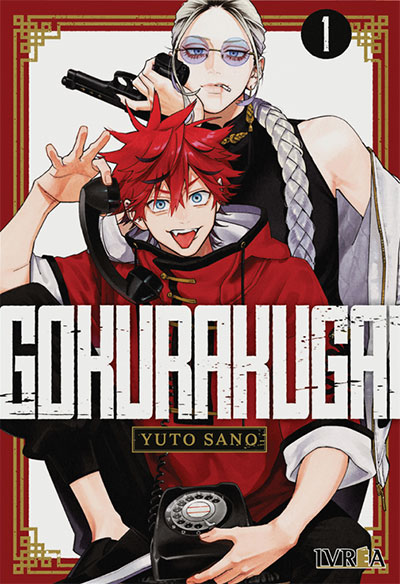
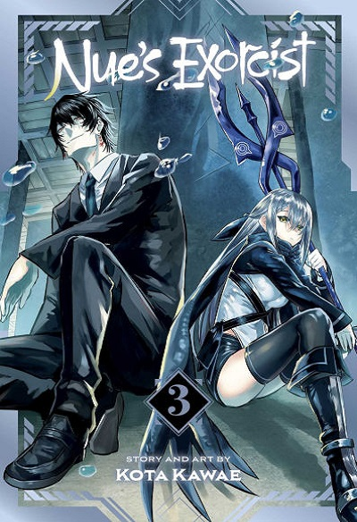
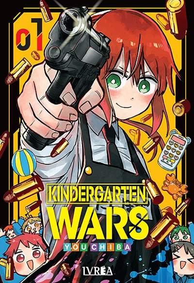
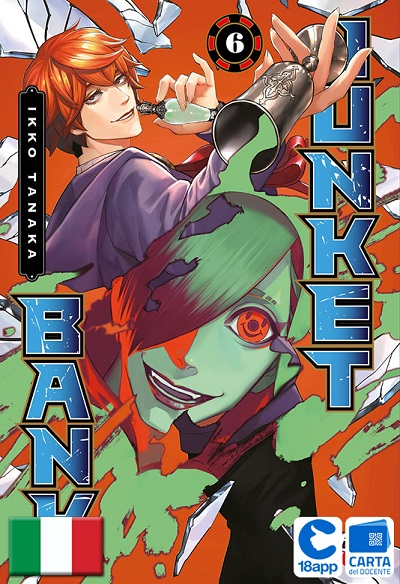

gokurakugai
Tao y Alma son dos jóvenes que manejan una particular agencia que se encarga de “solucionar problemas” en la ciudad de Gokurakugai. La pareja acepta trabajos de toda índole, desde la búsqueda de personas desaparecidas hasta ayudar a empresarios que son extorsionados a raíz de sus peculiares prácticas sexuales. Pero, en secreto, los chicos forman parte de una organización que se dedica a luchar contra los maga, monstruos nacidos de cuerpos sin vida de personas y animales
nue's exorcist
Nue's Exorcist es un manga de acción sobrenatural, comedia y ecchi escrito e ilustrado por Kōta Kawae, que comenzó su publicación en la Weekly Shōnen Jump en mayo de 2023. La historia sigue a Gakurô Yajima, un joven capaz de ver espíritus, que hace un contrato con Nue, un poderoso espíritu con forma de mujer que vive en su escuela. Gakurô debe colaborar con ella para derrotar a otros espíritus y a otros exorcistas, quienes desconfían de Nue. La serie fue seleccionada en el puesto 7 en los premios Manga
kindergartenwars
El jardín de infantes Noir es conocido como “el más seguro del mundo”. Allí concurren los hijos de importantes políticos, celebridades, gente de negocios y otras personas importantes. La institución cuenta con un insólito sistema para evitar que sus alumnos puedan ser secuestrados o asesinados: contratar criminales condenados para que trabajen como maestros, ofreciéndoles una reducción de pena a cambio de sus servicios. En medio de este particular contexto nos presentan a Rita
junketbank
Junket Bank es un manga japonés de drama, comedia psicológica y thriller, escrito e ilustrado por Ikkō Tanaka.Publicado en la revista seinen Weekly Young Jump de Shueisha desde julio de 2020. Mitarai, un empleado bancario hastiado de su rutina diaria, es trasladado a una misteriosa "Unidad de Tasación". Allí, su nuevo jefe, Usami, lo guía a un pasadizo secreto dentro del banco, revelando un mundo clandestino de apuestas donde se desarrollan intensos juegos. El manga está publicado en la revista Weekly Young.
DragonBall
Dragon Ball es considerado por muchos uno de los mejores y más importantes mangas de la historia debido a su impacto global, popularización del género shonen y la influencia de sus conceptos narrativos, como las transformaciones y escalas de poder, en obras posteriores. Es una leyenda del manga que sentó las bases para muchas historias de acción y compañerismo Su legado es tan fuerte que aún hoy en día sigue influyendo en nuevas generaciones de artistas y fanáticos
OnePiece
One Piece es consistentemente considerado uno de los mejores mangas de la historia por su narrativa, profundidad temática y éxito comercial, siendo el manga más vendido de la historia con más de 516 millones de copias. Su longevidad, la creación de un mundo inmersivo y la empatía generada con sus personajes también son factores clave de su aclamación.La obra de Eiichiro Oda aborda temas complejos como la justicia, la depresión y la desigualdad social, que resuenan con los lectores.
DetectiveConan
Detective Conan es considerado uno de los grandes mangas de la historia, a menudo rankeado entre los mejores por su éxito comercial, premios y popularidad global. Su calidad como serie de misterio, su extensa longevidad (publicado desde 1994) y la profundidad de sus tramas lo consolidan como un clásico del género y un referente cultural en Japón y el mundo. Ganó el prestigioso Premio Shogakukan en la categoría shōnen en 2001, un reconocimiento importante a su calidad literaria.
Berserk
Berserk es ampliamente considerado como uno de los mejores mangas de la historia debido a su arte detallado, su profunda y emotiva narrativa, y su impacto en la fantasía oscura. El manga es admirado por su estilo visual, su exploración de temas complejos y su habilidad para provocar una amplia gama de emociones en el lector. El arte de Kentaro Miura se destaca por su detalle, fluidez en las escenas de acción y el uso magistral del sombreado, lo que lo convierte en una obra de arte